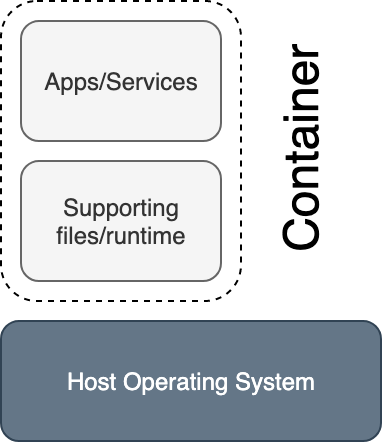
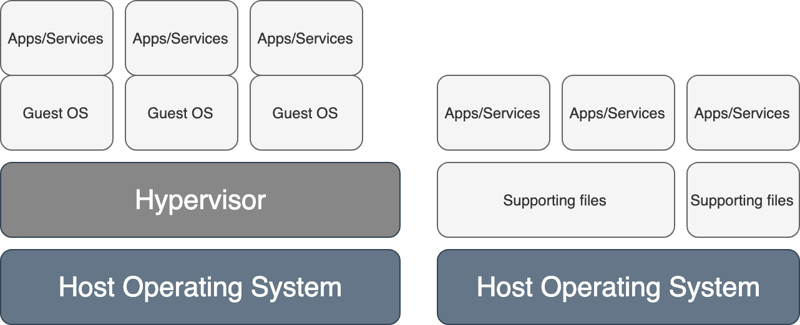

layout: true class: top title: Containers Intro place: Concur date: 20190909 datenice: 2019-09-09 email: jakub.veverka@sap.com author: Jakub Veverka examples: https://github.com/jwerak/container-examples username: glass password: paper --- class: center # {{ title }} ## {{ author }} {{ place }} {{ datenice }} --- class: center ## About me ### {{ author }} [{{ email }}](mailto:{{ email }}) [@jwerak](https://twitter.com/jwerak) Container Ecosystem Engineer [SAP Concur](https://www.concur.com) [linkedin.com](https://www.linkedin.com/in/jakub-veverka-a80a707/) --- # About training sessions * Containers intro - http://trainings.docker-skoleni.cz/containers-intro * Containers advanced * Kubernetes intro * Kubernetes advanced * Kubernetes @ Concur --- # Today's Agenda 1. Containers Introduction 1. Container Image manipulation 1. Running Containers 1. Building and sharing Container images --- # Course Objectives * Understand what are Containers * Use Containers and Docker effectively * Know how to create and share Containers Feel free to ask any time. --- name: intro exclude: true # Introduction --- ## Microservice ... the microservice architectural style is an approach to developing a single application as a suite of small services, each running in its own process and communicating with lightweight mechanisms, often an HTTP resource API ... Martin Fowler * Microservice is architecture (and development style) * It isn't a deployment model ??? * Various dependencies * Easier development * Easy rollout/rollback code pipeline - focus on shipping the code infrastructure as a code - describe infrastructure and use it to run code --- ## Architectures - Application run on baremetal server - isolated HW -- - VMs are running on top of it - decoupled from HW - multiple kernel, HW isolated -- - Application is running in containers - shared kernel - simplified management ??? * focus on shipping the code --- ## Containers are for - microservices - stateless --- ## What are containers .center[  ] ??? - package - runtime - shared kernel --- ## Containers vs VMs .center[  ] --- ## How Containers contain [cgroups](http://man7.org/linux/man-pages/man7/cgroups.7.html) * in kernel since 2008 (2.6.24) * created by Google * resource limitations * resource prioritization * accounting * state control (frozen, restarted) --- ## How Containers contain [linux namespaces](http://man7.org/linux/man-pages/man7/namespaces.7.html) | Namespace | Purpose | |-----------|---------------------------------------------| | mnt | Mount points | | pid | Provide independent process IDs | | net | Networking stack | | ipc | Inter-process communication | | uts | Provide different host and domain names | | uid | Privilege isolation and user identification | | cgroup | Prevent leaking control-group | --- ## Docker Platform for managing containers, images and other resources. It bundles together existing technologies to provide easier management for containers environment. .center[  ] ??? dotCloud open-sources their container engine and that engine became docker. --- ## OCI [Open Container Initiative](https://www.opencontainers.org/) Project to design open standards for Linux containers and virtualization. Contain specification for containers: * [runtime-spec](http://www.github.com/opencontainers/runtime-spec) * [image-spec](http://www.github.com/opencontainers/image-spec) ??? * https://github.com/opencontainers/image-spec/blob/master/config.md * https://github.com/projectatomic/skopeo runtime specification outlines how to run a "filesystem bundle" that is unpacked on disk --- # Container Image * elementary block of a container * stores files (not filesystem) - like tar * similar purpose like image for VM * read-only sharable layers * ways to build image: * `docker build` * `docker commit` * `docker import` * `buildah` - [projectatomic/buildah](https://github.com/projectatomic/buildah) --- ## Working with images * Never use Docker hub in production! * Download image from [Docker Hub](https://hub.docker.com/) * `docker pull python:3.6` * List images * `docker images` * Tag (rename) image * `docker tag python:3.6 jwerak/mypython:3.6` * Push image * `docker push jwerak/mypython:3.6` * Remove image * `docker rmi jwerak/mypython:3.6` --- ## Image names .center[ ``` quay.io/jwerak/python:3.6 |_____| |____| |_____||_| registry dir name tag ``` ] * default **registry** is `docker.io` (references [Docker Hub](https://hub.docker.com/)) * default **tag** is `latest` ??? * --add-registry on RHEL/Fedora - /etc/sysconfig/docker * https://access.redhat.com/articles/1354823 --- ## Lab: image basics 1. Download image called `hello-world` 1. Tag this image to `hello-training:{{ date }}` 1. What is image ID of this image? And original image? Extras: * Try to run container with this image by `docker run --rm hello-world` * List all tags for `hello-world` image * https://hub.docker.com/_/hello-world/ * `skopeo inspect docker://hello-world` --- # Container Container is "process" running in an isolated environment. .small[ ```bash # docker ps CONTAINER ID IMAGE COMMAND CREATED STATUS PORTS NAMES ee984e0ade27 spotify "spotify" 7 hours ago Up 7 hours spotify 9d6c4eb26908 mariadb "docker-entrypoint.sh" 7 days ago Up 32 hours 3306/tcp fran_db_1 6172469c1af8 rabbitmq "docker-entrypoint.sh" 2 weeks ago Up 32 hours 4369/tcp fran_mq_1 ``` ] * Container storage is ephemeral --- ## Starting the container 1. User runs command * `docker run ubuntu:latest` 1. `docker` CLI connects to docker daemon 1. `docker` daemon check if image is present 1. images is pulled if missing - !!! 1. image is used to create container 1. network and storage can be allocated (will be described later) 1. new (and changed) files are stored in read-write layer * We can attach to console of running container * Run `docker` to get all possible actions --- ## Start container * Run process in container * `docker run debian hostname --fqdn` * Run process in container and do interactive attach * `docker run --rm -ti debian bash` * Run detached container * `docker run -d debian ping kubernetes.io` * List containers (`-a` includes stopped) * `docker ps -a` --- ## Interacting with container * Attach to running container * `docker attach container_id_or_name` * `Ctrl + p, Ctrl + q` can be used to detach from container * Get information about container * `docker inspect container_id_or_name` * Run another process in container * `docker exec -ti container_id_or_name bash` * Print logs of process in container * `docker logs container_id_or_name -f` * Stop all running containers (not recommended for production ...) * `docker stop $(docker ps -q)` --- ## Other Docker commands * `build`: Build an image from a Dockerfile * `cp`: Copy files/folders between a container and the local filesystem * `exec`: Run a command in a running container * `images`: List images * `stop`: Stop one or more running containers * `kill`: Kill one or more running containers * `ps`: List containers * `restart`: Restart one or more containers * `rm`: Remove one or more containers * `rmi`: Remove one or more images * `tag`: Create a tag TARGET_IMAGE that refers to SOURCE_IMAGE --- ## Lab: Backup MySQL database 1. Start MySQL database in container * `docker run --name db -d -e MYSQL_ALLOW_EMPTY_PASSWORD=1 mariadb` 1. Create database `workshop` * Command to execute in container: `mysql -u root -e "CREATE DATABASE workshop"` 1. List databases * SQL command `SHOW DATABASES` 1. Backup directory `/var/lib/mysql/` from container to host 1. What is the size of this backup? 1. Can you find another way to backup database? --- # Building images .left-column[ ## Writing Dockerfile * Recommended way * We want to have "reproducible" images * `Dockerfile` is plain text * Build is performed by docker daemon (or `buildah`) * Build creates an image * Use version control * [Dockerfile reference](https://docs.docker.com/engine/reference/builder/) ] -- .right-column[ ## Example Dockerfile ```Dockerfile FROM debian LABEL maintainer="Jakub Veverka" RUN apt-get update && \ apt-get install -y curl procps && \ rm -rf /var/lib/apt/lists/* COPY build_out/app /bin/ CMD ["/bin/app"] ``` * `docker build -t myimage .` * Build uses cache - will speed up build process ] --- ## Important Dockerfile Instructions * `FROM image` sets base image * `LABEL key value` add labels to the image * `ENV key value` set environment variable * `RUN` executes commands in image * `WORKDIR dir` set current working directory * `ADD src dest` copies new files * `CMD cmd` default command to be executed in container * `EXPOSE port` inform about open ports * `VOLUME volume` create mount point with volume * `ENTRYPOINT` configure executable for container * Each command creates new layer ??? * ADD vs COPY: add can get URL or tar --- ## One Container == One process * Philosophy: containers are meant to do one thing only * process dies => container dies * **PID 1** & signal handling * one stdout/stderr from container --- ## CMD & ENTRYPOINT ```Dockerfile CMD ping localhost => /bin/sh -c ‘ping localhost’ ``` ```Dockerfile ENTRYPOINT[“ping”] CMD[“localhost”] => ping localhost $ docker run my_container www.google.com => ping www.google.com ``` --- ## LAB: Create Dockerfile * Create Dockerfile for image that will `ping localhost` on startup * Start container to verify that ping goes to localhost * Update Dockerfile to change ping endpoint for each run --- ## Shell vs Exec Form ```Dockerfile CMD[“ping”, “localhost”] => /bin/ping localhost ``` --- ## LAB: Shell vs Exec Form * Update Dockerfile to change ping endpoint based on ENV variable * Hint: mind when environmental variable is evaluated --- ## PID1 .lc[ * Container have it's own PID namespaces * PID 1 process is special, usually `init` * Please don't run init in containers * Is responsible for: * collection zombies * handling signals * `docker run --init` is a (bad) way * Running scripts in containers - make sure exec is used * Bad: `nging` * Good: `exec nginx` * Shell form vs exec form * Shell: `CMD /start.sh` * Exec: `CMD ["/start.sh"]` ] -- .rc[ ### Wrong ```bash PID COMMAND 1 /bin/bash /start.sh 8 nginx: master process nginx -g daemon off; 9 \_ nginx: worker process ``` ### Right ```bash PID COMMAND 1 nginx: master process nginx -g daemon off; 8 nginx: worker process ``` ] --- ## LAB: PID1 * Build container image from https://github.com/jwerak/container-trainings/tree/master/labs/dockerfile-PID1 * Start container and execute `ps aux` in this container * Which process have PID 1? Is it `nginx`? * Use `time docker stop {{ container }}` to stop container and observe **total** time to stop containers * Fix issue with PID 1 (`nginx` process should have PID 1), and repeat from point **1** * How long does it take to stop container with proper PID?